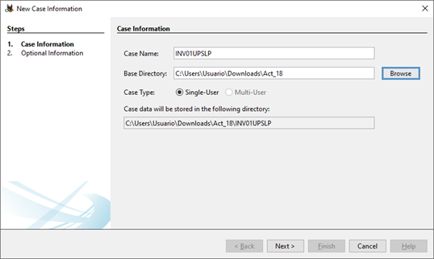
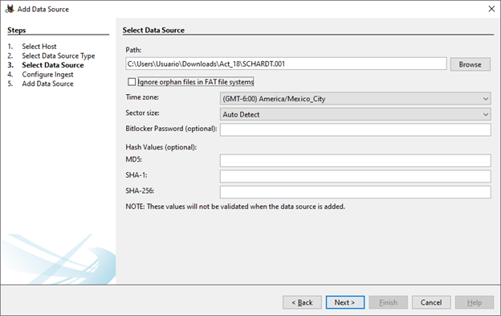
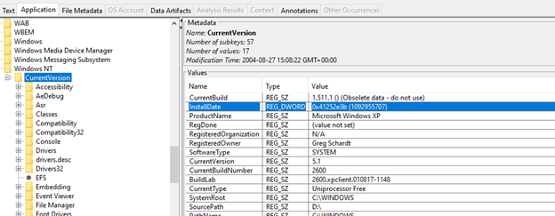
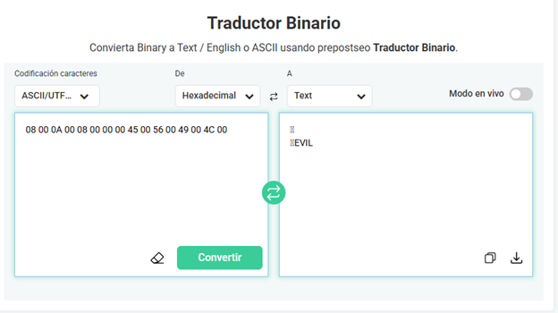
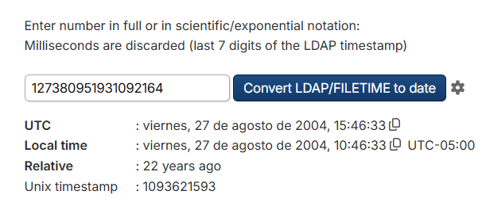
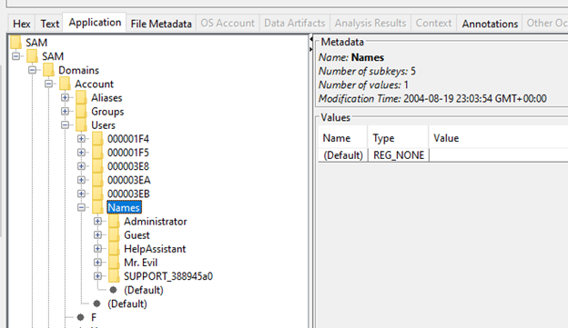

Ficha Técnica
Actividad 18: La investigación forense: la huella digital de un cibercriminal
Peritaje forense digital sobre una imagen de disco (SCHARDT.001) empleada en el entrenamiento de agentes de la NSA Cybersecurity y fuerzas del orden. El análisis se enfoca en la inspección de colmenas del Registro de Windows y artefactos del sistema en Autopsy para atribuir técnicamente un equipo abandonado al sospechoso Greg Schardt (alias "Mr. Evil").
Evidencia Física: Laptop Dell CPi (S/N: VLQLW), tarjeta PCMCIA inalámbrica y antena externa 802.11b casera abandonadas el 20/09/2004.
Modus Operandi: Intercepción de tráfico en hotspots públicos (Starbucks / T-Mobile) para robo de tarjetas de crédito y credenciales (carding / wardriving).
Software: Autopsy Digital Forensics
Caso: INV01UPSLP (Caso N.º 01)
Imagen Analizada: SCHARDT.001 (Zona horaria configurada: GMT-6:00 America/Mexico_City)
Configuración
Paso 1 y 2: Creación del Caso e Importación de la Imagen Forense
Se inicializó el expediente forense INV01UPSLP dentro de Autopsy registrando los metadatos del examinador, las notas del caso (Fraude (carding) Greg Schardt) y la organización correspondiente (Universidad Politécnica de San Luis Potosí).

>_ Evidencia 01: Creación del caso INV01UPSLP en Autopsy.
Logical Files: Se refiere a la importación y análisis de archivos o carpetas individuales extraídos previamente de un sistema, en lugar de analizar una imagen completa bit a bit de un disco duro.
Local Disk: Se refiere a analizar un disco físico, partición o unidad extraíble (como una memoria USB o disco duro) conectado directamente a la estación de trabajo del investigador en ese preciso momento.
Para este peritaje se seleccionó la opción Disk Image or VM File cargando la imagen SCHARDT.001 y habilitando la totalidad de los módulos de ingesta (Recent Activity, Hash Lookup, File Type Identification, Keyword Search, Email Parser, PhotoRec Carver, Plaso, entre otros) sobre todos los archivos, directorios y espacio no asignado.

>_ Evidencia 02: Carga de la imagen forense SCHARDT.001.
Investigación
Extracción de Evidencia de las Colmenas del Registro (SYSTEM, SOFTWARE, SAM y SECURITY)
ProductName : Microsoft Windows XP (Build 2600.xpclient.010817-1148)
InstallDate : 0x41252e3b (1092955707) -> 19 de agosto de 2004, 17:48:27 CDT (UTC-5)
Procedimiento: Se inspeccionó la colmena SOFTWARE en la clave CurrentVersion. El valor DWORD InstallDate almacena una marca de tiempo Unix (1092955707), la cual al convertirse revela la fecha exacta de instalación del sistema operativo.

>_ Evidencia 03: Inspección de la clave CurrentVersion revelando el sistema Windows XP, InstallDate y propietario registrado.
StandardName : Central Standard Time (Bias = 360 / UTC-6)
DaylightName : Central Daylight Time (ActiveTimeBias = 300 / UTC-5 activo)
Procedimiento: En la colmena SYSTEM, la subclave TimeZoneInformation confirma que el equipo operaba bajo la Hora Estándar del Centro (UTC-6) con el horario de verano activo (CDT, UTC-5).
Owner (RegisteredOwner) : Greg Schardt
Name (Computer Name) : N-1A9ODN6ZXK4LQ
Product ID : 55274-640-0147306-23684 (Arquitectura x86)
Procedimiento: Desde la vista Operating System Information en Data Artifacts, se extrajeron las propiedades Owner y Name, vinculando directamente la instalación del sistema con el nombre real del sospechoso.
Valor Hexadecimal : 08 00 0A 00 08 00 00 00 45 00 56 00 49 00 4C 00
Decodificación : EVIL
Procedimiento: Al abrir la colmena SECURITY y navegar a Policy > PolPrDmN, se obtuvo la secuencia en hexadecimal que, al traducirse a texto ASCII/UTF-16, revela el dominio principal EVIL.

>_ Evidencia 04: Conversión hexadecimal a texto del valor PolPrDmN obteniendo el identificador EVIL.
ShutdownTime (Raw Little-Endian) : C4 FC 00 07 4D 8C C4 01
Orden Invertido (Big-Endian Hex) : 01C48C4D0700FCC4 -> Decimal: 127380951931092164
Fecha Convertida (FILETIME) : Viernes, 27 de agosto de 2004, 10:46:33 CDT (15:46:33 UTC)
Procedimiento: El valor binario de 8 bytes almacenado en ShutdownTime utiliza el formato Windows FILETIME. Tras invertir el orden de los bytes (endianness), convertir el valor hexadecimal a decimal y procesarlo en EpochConverter, se determinó el instante exacto del último apagado del sistema.

>_ Evidencia 05: Inversión de bytes y conversión del timestamp FILETIME correspondiente al último apagado.
Number of subkeys : 5 cuentas registradas
Perfiles listados : Administrator | Guest | HelpAssistant | Mr. Evil | SUPPORT_388945a0
Procedimiento: La inspección de la colmena SAM confirma 5 subllaves de cuentas locales, destacando el perfil activo Mr. Evil (RID 0x3EA / 1002), pseudónimo empleado por Greg Schardt.

>_ Evidencia 06: Enumeración de las 5 cuentas locales en la colmena SAM confirmando el usuario "Mr. Evil".
Conclusiones
Tabla Resumen de Atribución Forense
| Parámetro Forense | Origen / Colmena | Resultado Obtenido |
|---|---|---|
| Sistema Operativo | SOFTWARE\...\CurrentVersion |
Microsoft Windows XP |
| Fecha de Instalación | CurrentVersion\InstallDate |
19/08/2004 — 17:48:27 CDT (UTC-5) |
| Zona Horaria | SYSTEM\...\TimeZoneInformation |
Central Standard Time (UTC-6) / CDT (UTC-5 activo) |
| Propietario Registrado | RegisteredOwner / OS Info |
Greg Schardt |
| Nombre del Equipo | Operating System Information |
N-1A9ODN6ZXK4LQ |
| Dominio Principal | SECURITY\Policy\PolPrDmN |
EVIL |
| Último Apagado | SYSTEM\...\Windows\ShutdownTime |
27/08/2004 — 10:46:33 CDT (15:46:33 UTC) |
| Cuentas en SAM (5) | SAM\Domains\Account\Users\Names |
Administrator, Guest, HelpAssistant, Mr. Evil, SUPPORT_388945a0 |
El peritaje establece una vinculación técnica directa entre la portátil Dell CPi abandonada y el sospechoso: el sistema fue registrado explícitamente a nombre de Greg Schardt, el grupo de trabajo se configuró como EVIL y existe la cuenta local activa Mr. Evil, coincidiendo de forma exacta con su alias criminal.
Asimismo, la línea de tiempo revela una ventana de operación sumamente corta (del 19 de agosto de 2004 al 27 de agosto de 2004, apenas 8 días de uso antes de ser hallada el 20 de septiembre junto a la antena 802.11b casera). Esto demuestra que la computadora fue preparada como un equipo temporal para campañas de intercepción inalámbrica en hotspots públicos y posteriormente descartada.